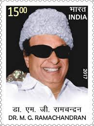

of holding Chief Minister's Office.svg)
| No | முதல்வர் | இருந்து | வரை | கட்சி பெயர் |
|---|---|---|---|---|
| 1 |
மு.க.ஸ்டாலின் 
|
07 May 2021 | Present |
திமுக |
| 2 |
எடப்பாடி கே. பழனிச்சாமி |
16 Feb 2017 | 03 May 2021 |
அதிமுக |
| 3 |
ஓ.பன்னீர் செல்வம் 
|
06 Dec 2016 | 15 Feb 2017 |
அதிமுக |
| 4 |
ஜெ.ஜெயலலிதா 
|
24 May 2016 | 04 Dec 2016 |
அதிமுக |
| 5 |
ஜெ. ஜெயலலிதா
|
23 May 2015 | 23 May 2016 |
அதிமுக |
| 6 |
ஜெ. ஜெயலலிதா
|
29 Sep 2014 | 22 May 2015 |
அதிமுக |
| 7 |
ஜெ. ஜெயலலிதா
|
16 May 2011 | 27 Sep 2014 |
அதிமுக |
| 8 |
மு.கருணாநிதி 
|
13 May 2006 | 15 May 2011 |
திமுக |
| 9 |
ஜெ. ஜெயலலிதா
|
02 Mar 2002 | 12 May 2006 |
அதிமுக |
| 10 |
ஓ.பன்னீர் செல்வம்
|
21 Sep 2001 | 01 Mar 2002 |
அதிமுக |
| 11 |
ஜெ. ஜெயலலிதா
|
14 May 2001 | 21 Sep 2001 |
அதிமுக |
| 12 |
மு.கருணாநிதி
|
13 May 1996 | 13 May 2001 |
திமுக |
| 13 |
ஜெ. ஜெயலலிதா
|
24 Jun 1991 | 13 May 1996 |
அதிமுக |
| 14 |
ஜனாதிபதி ஆட்சி |
30 Jan 1991 | 24 Jun 1991 |
திமுக |
| 15 |
மு.கருணாநிதி
|
27 Jan 1989 | 30 Jan 1991 |
திமுக |
| 16 |
ஜனாதிபதி ஆட்சி |
30 Jan 1988 | 27 Jan 1989 | |
| 17 |
ஜானகி ராமச்சந்திரன் |
07 Jan 1988 | 30 Jan 1988 |
அதிமுக |
| 18 |
வி.ஆர். |
24 Dec 1987 | 07 Jan 1988 |
அதிமுக |
| 19 |
எம்.ஜி. ராமச்சந்திரன்

|
10 Feb 1985 | 24 Dec 1987 |
அதிமுக |
| 20 |
எம்.ஜி.ராமச்சந்திரன் |
09 Jun 1980 | 15 Nov 1984 |
அதிமுக |
| 21 |
ஜனாதிபதி ஆட்சி |
17 Feb 1980 | 09 Jun 1980 | |
| 22 |
எம்.ஜி.ராமச்சந்திரன் |
01 Jul 1977 | 17 Feb 1980 |
அதிமுக |
| 23 |
ஜனாதிபதி ஆட்சி |
31 Jan 1976 | 30 Jun 1977 | |
| 24 |
மு.கருணாநிதி
|
15 Mar 1971 | 31 Jan 1976 |
திமுக |
| 25 |
மு.கருணாநிதி
|
10 Feb 1969 | 04 Jan 1971 |
திமுக |
| 26 |
வி.ஆர். நெடுஞ்செழியன் |
03 Feb 1969 | 10 Feb 1969 |
திமுக |
| 27 |
சி.என். |
01 Mar 1967 | 03 Feb 1969 |
திமுக |
| 28 |
சி.என். அண்ணாதுரை |
06 Mar 1967 | 14 Jan 1969 |
திமுக |
| 29 |
எம். பக்தவச்சலம் |
02 Oct 1963 | 06 Mar 1967 |

காங். |
| 30 |
கு. காமராஜ் |
15 Mar 1962 | 02 Oct 1963 |
காங். |
| 31 |
கு. காமராஜ் |
13 Apr 1957 | 01 Mar 1962 |
காங். |
| 32 |
கு. காமராஜ் |
13 Apr 1954 | 31 Mar 1957 |
காங். |
| 33 |
சி. ராஜகோபாலச்சாரி |
10 Apr 1952 | 13 Apr 1954 |
காங். |
| 34 |
பி.எஸ்.குமாரசாமி ராஜா |
26 Jan 1950 | 10 Apr 1952 |
காங். |
| 35 |
பி.எஸ். குமாரசாமி ராஜா |
06 Apr 1949 | 26 Jan 1950 |
காங். |
| 36 |
ஓ.பி. ராமசாமி ரெட்டியார் |
23 Mar 1947 | 06 Apr 1949 |
காங். |
| 37 |
தெங்குட்டுரி பிரகாசம் |
30 Apr 1946 | 23 Mar 1947 |
காங். |
| 38 |
ஜனாதிபதி ஆட்சி |
29 Oct 1939 | 30 Apr 1946 |
காங். |
| 39 |
சி. ராஜகோபாலாச்சாரி |
14 Jul 1937 | 29 Oct 1939 |
காங். |
| 40 |
கர்மா வெங்கட ரெட்டி நாயுடு |
01 Apr 1937 | 14 Jul 1937 | Interim provisional ministry |
| 41 |
பொப்பிலி ராஜா |
24 Aug 1936 | 01 Apr 1937 | Justice Party |
| 42 |
பி.டி.ராஜன் |
04 Apr 1936 | 24 Aug 1936 | Justice Party |
| 43 |
பொப்பிலி ராஜா |
05 Nov 1934 | 04 Apr 1936 | Justice Party |
| 44 |
பொப்பிலி ராஜா |
05 Nov 1932 | 05 Nov 1934 | Justice Party |
| 45 |
பி. முனுசாமி நாயுடு |
27 Oct 1930 | 05 Nov 1932 | Justice Party |
| 46 |
பி.சுப்பராயன் |
04 Dec 1926 | 27 Oct 1930 | Unaffiliated |
| 47 |
பனகல் ராஜா |
19 Nov 1923 | 04 Dec 1926 | Justice Party |
| 48 |
பனகல் ராஜா |
11 Jul 1921 | 11 Sep 1923 | Justice Party |
| 49 |
சுப்பராயலு ரெட்டியார் |
17 Dec 1920 | 11 Jul 1921 | Justice Party |
வலி மிகவும் முக்கியமானது, நோயாளியின் வலிப்புத்தாக்கத்தின் விளைவு, ஆனால் அது உழைப்பு மற்றும் வலியை ஏற்படுத்தும் ஒரு நேரத்தில் அதைச் செய்யட்டும்.
எங்களை பற்றி
ஆண்டு அறிக்கைs
எங்கள் அணுகுமுறை
புள்ளிவிவரங்கள்
விரைவான தொடர்பு
தன்னார்வ படிவம்
பதிவர்
இந்தப் பக்கத்திற்குக் கிடைக்கவில்லை